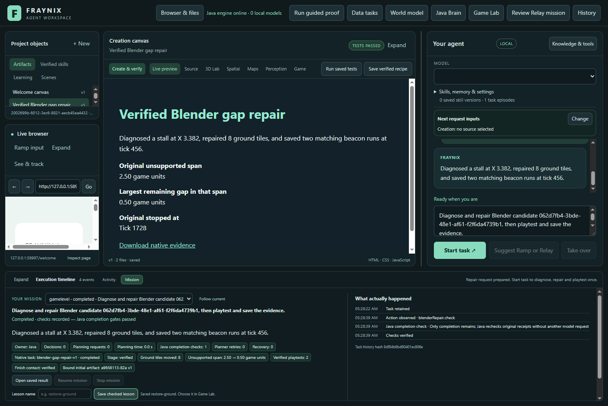
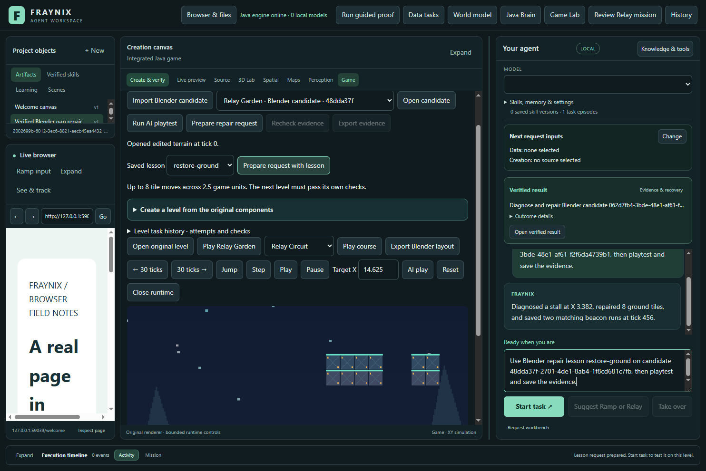
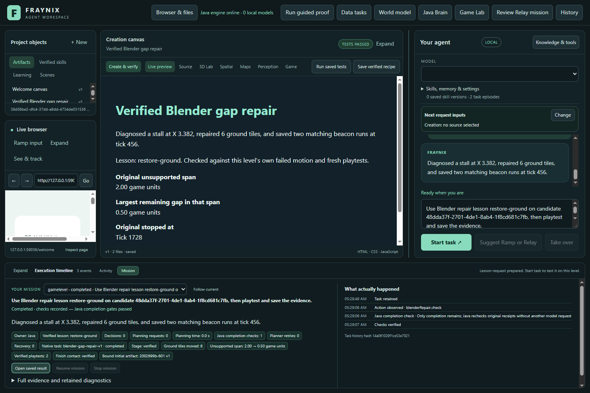

Teach Fraynix from a checked repair
Save a verified Blender repair as a named lesson. Apply it to different terrain through Chat and require fresh playtests before accepting the result.

Name and save the lesson in Mission

Select the verified lesson and prepare a fresh Chat request

The new repair report passes its own browser checks
System files
Open source